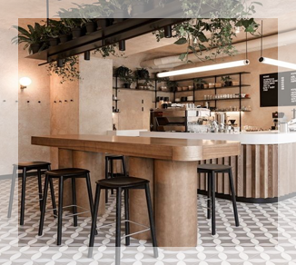
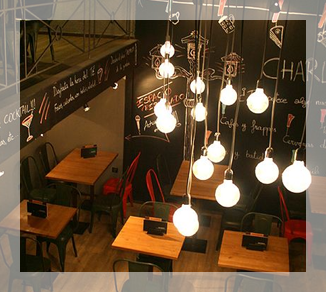
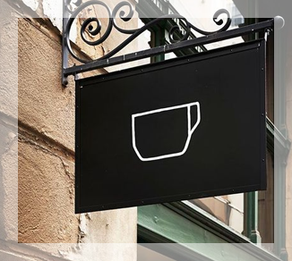
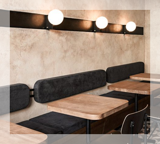

NOSSA ESTÓRIA
“Um homem, um plano, um grão de café”. Ok, isso não é um palíndromo, mas resultou em
uma xícara de café maravilhosa. O CEO do Starbuzz é um homem, e você já conhece seu
plano: um Starbuzz em cada esquina.
Em apenas alguns anos ele executou esse plano e hoje você desfrutar do Starbuzz em quase
todos os lugares. E, é claro, a maior notícia do ano é que o Starbuzz associou-se aos leitores do
Use a Cabeça para colocar o Café na Web, e a sua página está crescendo rapidamente e
ajudando a satisfazer as necessidades de cafeína de um novo grupo de clientes.
Obrigado(a) pela preferência!
Trabalho IFSO _ profª Daiane
Aluna: Marilia Gabriela Adorno de Souza - Prontuário:HT3001504